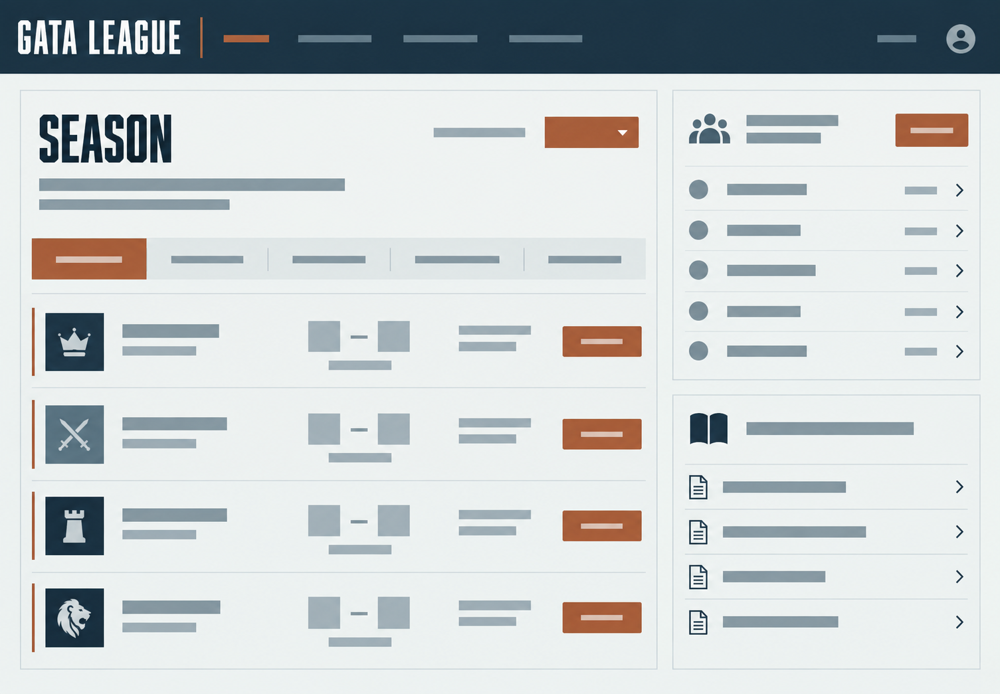
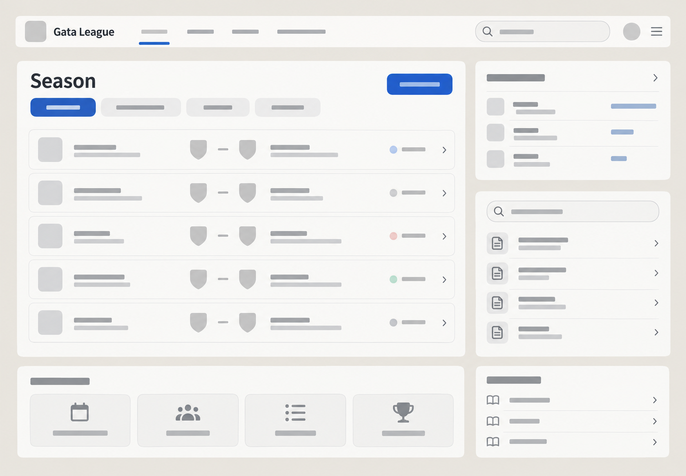
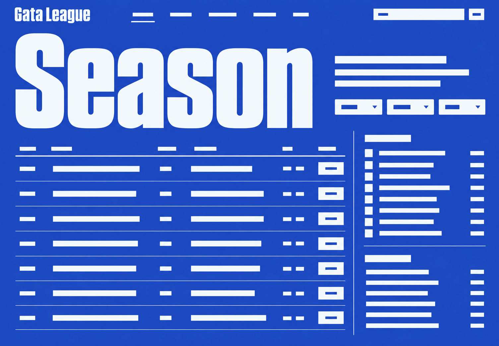
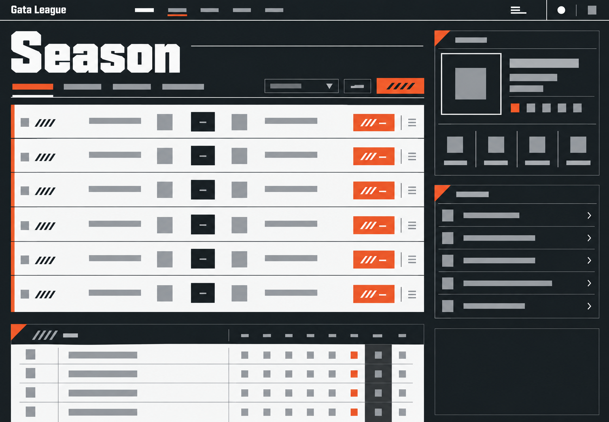
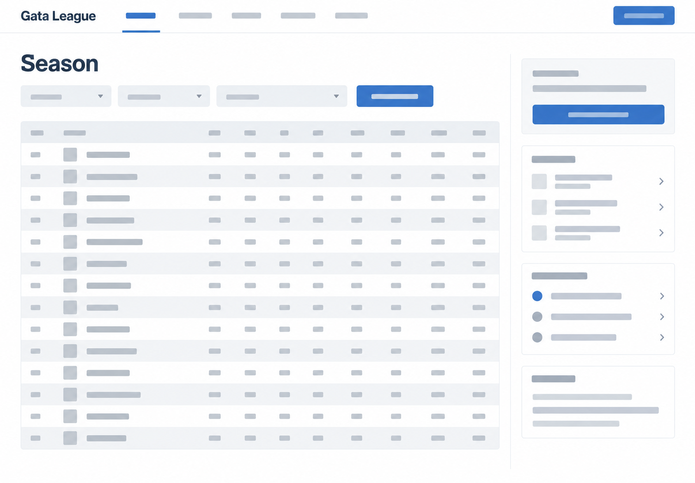

Gata — варианты дизайна
Выбран «Клубный турнирный журнал». Выбор сохранён, повторно подтверждать его не требуется. Эта страница остаётся доступной для просмотра эскизов.
Эскизы показывают визуальный язык. Полоски заменяют текст и данные; это не готовый сайт и не реальные результаты матчей.
Клубный турнирный журнал Выбрано
Серьёзный клубный характер с ясностью современного турнирного центра.

Потребует дисциплины: большие заголовки не должны вытеснять полезную информацию.
Личный кабинет игрока
Матч, команда и правила собраны в удобные блоки с навигацией под большим пальцем.

Самый удобный бытовой вариант, но менее выразительный для бренда лиги.
Турнирная афиша
Важность матча, сезона и раздела читается по масштабу названий.

Самый смелый вариант; важно не превратить рабочие экраны в плакат.
Турнирная мастерская
Жёсткая чёрно-белая графика и оранжевые отметки действий дают лиге боевой характер.

Может выглядеть слишком агрессивно, если перенести диагонали и крупные надписи в каждую таблицу.
Классический турнирный портал
Знакомая структура турнирного сайта с аккуратной типографикой и таблицами.

Меньше собственного характера; качество будет держаться на точности деталей.